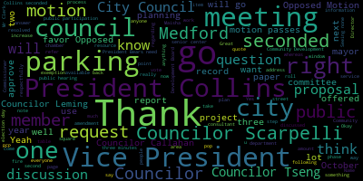
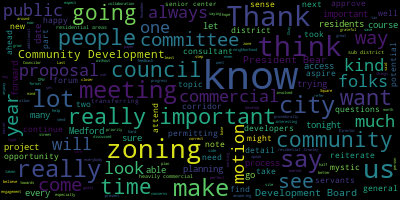

AI-generated transcript of City Council 10-29-24
Back to all transcripts
[SPEAKER_15]: Test one, two, two tests.
[SPEAKER_24]: Test one, two.
[Bears]: 20th regular meeting Medford City Council October 2024 Mr. Clerk, please call the roll Councilor Callahan.
[Hurtubise]: Vice President Collins, Councilor Lazaro, Councilor Lemming, Councilor Scarpelli, Councilor saying President bears present seven present none absent the meeting is called order please rise salute the flag.
[Bears]: announcements, accolades, remembrances, reports, and records.
24480, offered by President Behrs, resolution to thank two DPW staff members for an act of kindness and their dedicated service to Medford.
Whereas on Saturday, October 5th, quick thinking by DPW employees, Jeff Gangy and Anthony Pompeo helped return a lost wallet to Robert Bohannon, an 82 year old disabled veteran.
And whereas Mr. Bohannon was deeply thankful to have the wallet returned, both because it was designed by his late brother and because the cards and information would have taken months to replace, describing the act, quote, as quote, as close to a miracle as we have experienced and,
Whereas Mr. Bohannon and his wife wanted to express their gratitude and, quote, do something for these really thoughtful employees while noting that, quote, they wouldn't take anything and including his letter with the words, quote, we love Medford.
Now, therefore, be it resolved by the Medford City Council that we thank Jeff Genge and Anthony Pompeo from our DPW for their dedicated service to the city of Medford and honor their active service and kindness that was described as Mr. Bohannon as, quote, the best of many great moments I've experienced in Medford.
For me, we just got a really, really kind email and I felt like it was worth saying thanks.
Anyone want to say anything?
Vice President Collins.
[Collins]: Thank you, President Baird for putting this forward.
I also corresponded with Mr. Bohannon a little bit after he emailed the council and just wanted to reiterate, he was truly so grateful to the two DPW employees who went out of their way to help them out of a, you know, a sticky situation.
And it was so nice to get such a heartwarming letter about somebody saying, you know, this is what I know to expect from civil servants in Medford and just going out of his way to thank them.
So I extend those thanks to our DPW and those two gentlemen in particular.
[Bears]: Thank you, is there a motion?
On the motion to approve by Vice President Khan, seconded by Councilor Seng.
All those in favor?
Opposed?
The motion passes.
Records, the records of the meeting of October 15th, 2024, yes, were passed to Councilor Seng.
Councilor Seng, how did you find those records?
[Tseng]: I find them in order, I moved to approve.
[Bears]: On the motion of Councilor Seng to approve, seconded by Councilor Callahan.
Mr. Clerk, you don't have to call the roll.
All those in favor?
Opposed?
Motion passes.
reports of committees 24475 offered by council President bears committee of the whole October 15 2024.
This was the question and answer session that we held October 15 regarding the proposed override and debt exclusion ballot questions that are on the ballot on November 5.
And just a point of note, as regards to the voting Councilor Scarpelli raised to me the point of
the letting people know if you're coming in, we're seeing a lot of early voting, a lot of mail voting.
And just a reminder to everyone, when you early vote or you mail vote, your ballot is put into a sealed envelope and that envelope is opened on election day and counted on election day.
So if you're expecting it to run through the machine on the early voter, the mail vote, that's not how the state law around elections work.
So those envelopes will be opened by the elections department staff on election day and then will be run through the machines on election day, along with all the ballots of everyone who votes on election day.
Councillor Scarpelli.
[Scarpelli]: I've talked to the election commissioners and they said that these rules are all posted
at City Hall and the election in the elections office.
So if anybody does need some clarity that the election office does have all this information.
So thank you, Mr. President.
[Bears]: Thank you, Councillor Scarpelli.
On the motion to approve the committee report.
Bye.
Vice President Collins seconded by seconded by Councilor Callahan all those in favor.
Opposed motion passes 22379 22453 and 24470 offered by Council is our own public and health public health and Community Safety Committee October 16 2024 report to follow.
[Lazzaro]: Yes, this committee meeting was to discuss a number of items that have come up over the past sessions about gender-affirming care, reproductive health, and the possibility of gender-affirming care
public bathrooms in our parks in Medford and just the feasibility of all of these items.
This was a preliminary meeting for us to discuss the possibility of addressing all of these issues.
And we talked sort of broadly about how to begin the conversation.
And I would motion to approve.
[Bears]: Thank you.
On the motion approved by Councilor Lazaro, seconded by.
Seconded by Vice President Collins.
All those in favor?
Opposed?
The motion passes.
24069 and 24354 offered by Councillor Lemming, Chair of Resident Services and Public Engagement Committee, October 22nd, 2024, report to follow.
Councillor Lemming.
[Leming]: Thank you, Council President.
At this committee meeting, we heard a brief update from Councilor Sang on the progress of the Human Rights Commission updates, and we drafted a newsletter which was subsequently released, and that's what happened.
I have a motion to approve.
[Bears]: On the motion of Councilor Leving to approve, seconded by Councilor Callahan.
All those in favor?
Opposed?
Motion passes.
24033 offered by Vice President Collins planning and permitting committee October 23 2024 report to follow Vice President Collins.
[Collins]: Thank you, President bears at the planning and permitting meeting.
Last week we met once again with the council's zoning consultant and associates we reviewed the latest draft of the zoning proposal for the mystic Avenue.
Trying to get the new acronym, the mystic have Valley District, which is on the city council agenda tonight for us to report out to the Community Development Board which is procedurally the next step in any zoning amendment process so we had a discussion and then we voted it out of committee motion to approve.
[Bears]: On the motion to approve the committee report by Vice President Collins, seconded by Councilor Callahan.
All those in favor?
Opposed?
Motion passes.
Councilor Lemming.
[Leming]: Thank you, Council President Bares.
I have a motion to suspend the rules and take public participation out of order.
[Bears]: On the motion to suspend the rules to take public participation, seconded by Councilor Sang.
All those in favor?
Opposed?
Motion passes.
Public participation.
To participate outside of Zoom, please email ahertobeast at medford-ma.gov.
We do have a petition from Marion Tomazuk.
We have here October 23rd, 2024 petition to the Honorable City Council, Councilors, the undersigned respectfully pray for discussion of the well-used parking lot adjacent to the Medford Senior Center.
So recognize Marion and we will go from there.
Let me give you one second to turn on your microphone.
[Tomazuk]: Hello, I'm Marion Tomazuk.
I live at 29 Garfield Avenue, and I'm here to talk about the parking lot that is on the RFP plan that's adjacent to the Medford Senior Center.
I am here to talk to you and ask you if there's any way you can reconsider having this parking lot
be up for development.
It is a well-used parking lot.
It is necessary for the senior center to survive and also the businesses that are abutting it.
The senior center uses it on a daily basis.
The senior center is valuable.
It is used not only for the seniors, it is used for their families, resources, for counseling, for activities,
for learning, for education, for the families, for the seniors, and it also feeds them.
The parking is very necessary.
We do carpool as much as we can, but since this year, from January till October 15th, 8,787 cars have been parked there by,
seniors, and those are not duplicate people.
Those are just individuals that have been parking there.
On an average day, we have 51 people parking there.
On Monday, in August, it's exceptionally busy because of the air conditioning, and it's a cooling location.
So in August this year, on Monday, we had 193 people.
On Tuesdays, 293.
On 291,
I'm sorry, Wednesday, 184, Thursday, 206, on Friday, 116.
So average monthlies are also high.
In October, it's average is 200.
August's average is over 200.
So this is something we need.
If we don't have that parking spot, parking lot, the senior center will die.
Even if you start developing it, it'll be a good three years, there will be no parking.
nobody will be able to come.
The seniors will have no place to socialize, they'll have no place to go and have their meals, they'll have no place to go and have activities, there'll be no counseling, there'll be no low vision, there'll be no crochet, no knitting, no activities, no exercise programs, there'll be no healthcare programs, there'll be nothing for the seniors and we really need it.
Yeah, grief support is very is very vital.
We have the grief support groups, it helped me when my husband passed.
to get over it.
We have LGBT groups there.
We have everything you can imagine.
And like I say, it's not just for the seniors, it's for their families.
They need support to find out what they can do when their parents are failing.
It's for the low vision groups.
It's for the Alzheimer's.
It's for the disabled.
It's for a very high percent of the Medford population.
I'm humbling asking you if you can intervene and have us save this valuable parking lot.
Thank you.
[Bears]: Thank you to the members of the council.
Does anyone like to respond before we go to members of the public?
We'll go to Councilor Scarpelli.
And I do have a response from the planning department as well.
[Scarpelli]: Would you like to read that first, Mr. President?
[Bears]: Would you rather go first?
No.
Okay.
and then we'll go to, I'm gonna read the response, we'll go to councilors, then we'll go to the public.
I have here to Council President Behrs and honorable members of the council regarding the public participation petition respectfully submitted for your honorable body's consideration as additional information about activities concerning the municipally owned parking lot at 75 Riverside Avenue.
Clippership pop-up as of October 9th, the corner of the parking lot has been repurposed to create
Oh, sorry, repurpose to create the clipper ship pop up park, the pop up is utilized by the city, particularly the recreation department for periodic programming and is otherwise open for passive recreation to the public.
To create the pop-up park, no parking spaces were lost.
The pop-up area was created from what was a previously redundant drive aisle and six parking spots.
To prevent any loss of parking, eight new parking spots were re-striped in the parking lot, resulting in a net positive for parking spaces overall.
Please see photos below demonstrating locations of eight new parking spaces.
Request for proposals Medford Square, the city published an RFP request for proposal for three underutilized parcels behind City Hall on September 30th, 2024.
The city wants to garner interest from developers to explore what redevelopment options there would be for these three combined parcels, including mixed use buildings, affordable housing and parking structures.
The city will enter a long-term ground lease for up to 99 years with a qualified developer for these parcels.
The due date for responses is December 20th, 2024 at 1 p.m.
Community outreach for this project was conducted through focus groups and community meetings through the Transforming the Square project in partnership with Metropolitan Area Planning Council in 2023.
MAPC conducted research using previous plans and site visits of the square.
Please note that parking for our seniors is a top priority for the city.
The mayor explicitly mentioned this in her greeting to developers before the walkthrough last week.
Construction employee parking.
Due to the large-scale construction project at 121 Riverside Avenue, the adjacent Clippership lot has seen an influx of commercial and personal vehicle parking to accommodate workers and staff.
As a result of this temporary parking situation, the mayor contacted Medford Housing Authority Director Jeffrey Driscoll to get a more complete breakdown of what vehicles are occupying spaces during the day, how long this disruption is anticipated and how a compromise can be reached to alleviate community concerns and allow accessibility to the worksite.
The mayor concluded that there were up to an additional 40 cars due to the lot construction.
Director Driscoll has been receptive and helpful.
He reached out to the contractor for support
Jim Silva, Special Project Coordinator, also visited the lot earlier last week and requested that the workers use the lower City Hall lot instead so that seniors had spots when visiting the Senior Center.
It is a work in progress to get the construction workers to relocate, but we are doing everything possible as parking for our seniors is our priority.
Thank you for your kind attention to this matter.
And I'll recognize Councilor Scarbelli.
[Scarpelli]: And thank you for Mr. Tomazak bringing forward.
I know I've talked to a few of our friends in the audience and I think there was some confusion first that people seem to thought it was about the pop-up park, but it's not about the pop-up park.
The issues and concerns are something that we'll hear again later on tonight is that the way we're doing business in Medford is that we're really not getting the community involved.
I know they wanna say the community gets involved, but the truth of the matter is
Let me ask our seniors if we know that we have valuable land here.
And unfortunately, I think there has to be an understanding that we need some growth.
But if there was a partnership where we brought the process to the seniors and said, this is how we're going to look at the project.
We wanna make sure that all of your concerns are taken care of and get your input so you can share what you're afraid of.
and making sure that we fill those gaps.
I'm sure none of you have had that conversation with anybody from the city, correct?
Correct me if I'm wrong.
Okay, so this is what we're seeing right now in Medford, is that as we're going through our zoning changes, one thing we talked about was really going into the communities.
We put that in the RFP actually, about when we rezone, when we look at projects like this, we go into those communities, just like neighbor communities do when they do big projects like Assembly Row,
and they do big projects like Union Square in Somerville, they actually bring city staff to the neighborhood where people come out and talk to you and you can share your concerns.
So I'm hoping moving forward by coming to this podium, there is an issue, there is a concern, right?
I'm not gonna say that we don't need new growth and development.
I'm not gonna say that, I won't lie to you and tell you that I don't think that we need to use these parcels
to make a change to really invest in Medford.
But at the same time, what we need is an understanding and a form of partnership where our seniors can say, okay, if you're going to take this lot, what lot are we going to build
and to make sure that it's similar vicinity that our seniors can park and walk across the street or walk next door so we can accommodate all of the programs that you said are so important to you.
So I think moving forward, I think that we have a, you know, I hear you loud and clear.
I think that I'm going to advocate to make sure that as we move forward, especially with this RFP and these five parcels I heard that I think it's three, but
I also told there was maybe five that are coming down the line that it's going to encompass the whole square.
So we're going to see drastic changes here.
And it seems like we're forgetting the most vulnerable people in our community, mostly our seniors, and saying, well, let's just move forward.
So I'm welcoming.
I'll share my information, my phone number.
If you feel fear in any way, give me a call.
Let me at least try to be a voice as we go through this process, because unfortunately, it's happening.
Okay.
But I think that it could happen with a partnership.
So everybody's involved to make sure that all the concerns that you have are addressed.
So you're not going to sleep thinking, are we going to lose the grieving program?
We're going to lose the knitting program.
We're going to lose this program because there's nowhere to park.
So I think that's going to be important.
So I just want to share that with you, Mr. President.
I think that from what I've talked to a few of the seniors offline, and I think after this conversation I shared with them, they felt a little bit better.
But I think that we really need a buy-in from the city administration to work with our seniors, not just bring you cookies and pizza on election week, but really sit down with you and say, hey, what do you really need?
And making sure that your needs are met.
So thank you, Mr. President.
[Bears]: Thank you Councilor Scarpelli.
Any further comments?
Council Vice President Collins.
[Collins]: Thank you, President Behrs.
And I also want to appreciate the petitioner for bringing this forward.
I think it's really important for us to use this forum for folks to have that additional opportunity to say, here are my concerns with the RFP in general, this zone in general, this project in general.
I think there's absolutely, you know, we thank you for, you know, again, voicing how important it is for, you know, everybody who needs access to the senior center and any, however they get there, whether it's by bus or by shuttle, by carpool,
or by driving themselves.
The senior center is so important to Medford Square.
I'm heartened to see, you know, in the mayor's, in the memo from the planning department that that has been reiterated to some of the development, sorry, some of the developers who went on that site walk, that that's been said to them.
But I think it's important that we, you know, continue to reiterate this priority, which is a priority.
We have to make sure that people who need access to the senior center can continue to access it how they need to.
So we'll continue to help you emphasize that, and thank you for speaking to your concerns today.
[Bears]: Thank you, Vice President Collins.
We'll go to Councilor Zaro.
[Lazzaro]: Thank you.
I also just wanted to reiterate that we appreciate the concerns, especially, I understand that every time I visited the Senior Center, it's an incredibly bustling place to visit.
All the activities are really well attended.
I know that mobility issues can be a big concern for folks who are there.
So I know that parking is very important.
And my hope would be that as the city reviews the proposals that parking is always and public parking parking that's available to be used.
would still be part of the buildings that they put there.
But Councilor Lemming and I, we're members of the Resident Services Committee.
And as part of that, we did a listening session at the Senior Center a few months ago.
It wasn't super well attended, but it was the only only the first one we did.
And we didn't have a chance to make it sort of a consistent thing.
But I would be excited to do that more often.
and have more opportunities for people to bring us what they're concerned about and tell us about the things like that, that are coming up more regularly that you're thinking about.
And maybe if we can make it something that perhaps rotating members of city council that can come to the senior center and hear concerns from people, we can look into that in resident services and talk more about it.
[Bears]: Thank you.
[Leming]: This is just a very brief comment.
So I do definitely hear what Marianne is saying about during any construction phase, it's likely that parking would be unavailable during that time.
But the RFP, just to really highlight this, the RFP does call for the construction of a parking garage in any developments that are created so long term.
ideally going by what the RFP says, this wouldn't affect parking availability in the area.
So that's the idea, but I just wanted to, again, I'm hearing what Marianne is saying about the temporary unavailability during construction, but I did want to highlight that for folks in the room.
Thank you.
[Bears]: Thank you.
Yes.
And just procedurally, um, the next steps as far as I understand it, the memo mentioned that responses will be due December 20th.
I believe then the planning department would come to this body to request our approval to authorize a land lease.
So there would be further public meetings regarding the proposal, and it would require a vote of the council to authorize the city to lease the land.
No, I'm just saying that that's the next steps for the RFP, sorry.
But we will go to comments and everyone will have three minutes.
Give me one second as I figure out our new microphone system.
Name and address for the record, please.
[Warden]: My name is Cynthia Warden, 100 High Street, Medford.
There was a presentation at the senior center before the mayor's election, and we were told a lot about it.
There was definitely not enough parking spaces.
Most of the seniors are physically handicapped, medically handicapped.
It's a lifeline for the people in Medford.
I'm getting all choked up.
I've had experiences with people whose spouses have died and they were able to come to the senior center and to save their lives.
It's like they're blatantly forgetting the seniors in Medford.
That's enough, that says it.
[Bears]: name and address for the record.
You have three minutes.
[Creamer]: I'm Elizabeth Creamer, 60 Pleasant Street in Medford.
And not to repeat what other people have said.
I may have missed some of what you said, but I have concerns about the parking at the senior at the parking lot near the senior center.
I go there several times a week myself, and I often circle around many times and end up parking back on Riverside app down near the stores or back behind CBS.
And
When you think about the winter coming, it's not really acceptable that you would have to park that far away to go to the senior center.
I'm one of the lucky ones that are still able to drive.
I'm in my 80s, but not everybody can walk as easily as when they're younger.
So I'm concerned about that.
Despite what people say, there is a lack of parking there.
And as you heard before,
From January until October, there was 8,787 cars that parked there to go to the senior center.
And many of these people take people with them.
It's a very vital center.
There's a lot for people's health and wellness and their well-being.
And I really hope that you will consider parking
for the seniors and not to be thinking that we can just go far away and get parked and park somewhere and still be able to get to the center.
It's not going to be.
I know what it's like in the wintertime when CVS was open.
know, the parking lot near the senior center is well plowed.
It's well taken care of.
But the streets around are not.
There's snow banks, there's ice, and it is really hazardous.
And just another little thought about the pop-up park.
I don't know where the common sense is of putting a pop-up park in a parking lot when parking is needed.
There's no green space there.
There's no trees.
There's no shade.
Just my opinion.
Thank you for listening to me.
[SPEAKER_07]: Thank you.
Thank you very much.
[Bears]: Name and address for the record.
You have three minutes.
[Fennelly]: Good evening, Claudia Fennelly 36 Farragut Ave.
I do thank you, Chairman Sachs for reviewing the proposal, because I had heard about the 99 year lease and I have to say at the outset that I was pretty.
It took me back to the days of Ozzie and Harriet because honestly, it's a very anti progressive.
proposal for 99 year lease because the city and the growth of the city that is anticipated and what it actually turns out to be in reality in the future are two separate things.
I don't think that the city benefits by that.
I think it's a short term solution.
The comments today about the senior center as I do go to the senior center are all valid.
What I have observed in Meffitt Square is that the parking lots usage is event driven.
So if you have the Chevalier, Deep Cuts, the senior center, and they're all at different senior centers usually during the day, first thing.
the Chevalier is at night.
When those events happen, your lots are full.
You have off hours and that's probably what you observe as the not in use aspect of it.
However, I am very concerned about just tossing these parking lots out without getting the public's interest and input because Chevalier
If you don't plan it right, it's a wonderful asset.
It makes Medford progressive.
But if they can't get people to park in the area, which parking is a challenge when you have a big popular event, then you're going to lose revenue.
And it's a fine balance between looking at housing, business, retail, concert venues, music venues.
It's a juggling act.
You have to bring in revenue in order to make all these possibilities happen.
So my question I have for the council here is how are you allowing the
Chevalier the method public library, the deep cuts, and the restaurants that are drawing in revenue and people, how are you allowing them to have an input a say in the proposal for the parking lots, because that is going to determine the outlook for the city and its growth aspect in years to come.
So as you've heard, the seniors mentioned that during their usage during the day, it's insufficient.
And if you take away that lot, the senior center will be impacted, which by the way, if you look at other senior centers in other cities, Medford is really very active and has a lot of activities.
And that brings in other people from other cities as well.
So I was just wondering how you plan to address
businesses and include their input for the plan of these parking lots.
[Bears]: Thank you.
I can speak to the process that the planning department is working on.
I spoke with the planning director, Alicia Hunt, and she was at the Chamber of Commerce.
I think last week they had a day where all the businesses in the square could meet with her and kind of have conversations about this.
That includes the current chair is the Chevalier manager, Andrew Mather, and
So that was something that happened, and I know that she relayed to me that there was a lot of excitement, but they did want to be engaged specifically around this question of parking.
And one of the things that they were looking at, and I don't know if it's going to happen as part of this project, and it really depends on the proposals that come in from the people who are proposing, was seeing if the parking garage that is attached to Atrius Health could be redeveloped to be a more public parking garage.
so that during the day it could be used by the health folks and at night potentially be used for other uses, because right now it's closed at night.
But I don't think that would be the only answer, but that was just an idea that I had heard.
In any case, there was a meeting with the Chamber of Commerce specifically about these RFPs with the businesses in the square.
Thank you.
Does anyone else want to speak on the topic Councillor saying, Thank you.
[Tseng]: Just wanted to thank our seniors for taking time out of their evenings to come here.
I know it's not the easiest and raising more attention about this issue.
It is an issue I've, I heard at the senior center last time I visited.
It's an issue that I know the planning department has spoken to me a little bit about in our meetings about development in Medford Square.
But I think it's really important to reiterate that
The, this is just the very beginning of the RFP process that will have to look at the projects that are proposed that come in, there'll be public, there'll be public meetings about it I think at that time we'll have to make sure that we extend an invite to the members of the senior center as well.
to make sure that, you know, what I'm hearing is that there's a need for parking, but it's not just the need for parking, it's a need for a transition plan while we do the development, the growth that we need to do in Medford Square as well.
And so leveraging things like the Atrius Hall parking lot, leveraging spaces that aren't open right now, I think will become an important part of that transition plan.
And I think part of that needed conversation with our planning department, and I know the planning department's already
talking about a lot of these issues.
There can always be more community engagement.
There's always a need to balance our growing square, our growing revenue sources in the square with the lived reality on the ground as well.
So I wanted to, again, thank you guys for coming in today.
And I know there are folks from the planning department watching this meeting, and I hope that that becomes part of the conversation too.
[Bears]: Thank you.
Any further discussion on this public participation petition?
Councillor Callahan.
[SPEAKER_07]: One second, please.
[Beckwith]: really important that you hear the beeps.
[Bears]: I need your name and address for the record to start off.
[Beckwith]: It's Lorna Jane Beckwith.
[Bears]: Thank you.
[Beckwith]: And I live in West Medford.
[SPEAKER_07]: Thank you.
[Beckwith]: But I pick up people all over to go.
So what I'm trying to say is, I think when it comes to revenue and money, the seniors are going to be tossed out and I feel it.
And I'd like you to like, tell me that isn't true.
But I think it is.
Because if you say the atrius, that's for people that are getting medical help and it's full.
It's a nice idea, but it's not real.
We need definite parking or we can't go to the senior center.
Just like in West Medford, we need a path.
It's taking eight years to get that path.
You really need to consider seniors in the city.
Now, I know that the youth, you're important, the schools are important, but the seniors have built this city.
We've grown up here and we've given ourselves to the city of Medford, and I think you need to consider us.
And that's why I brought up the grief group, because some of us are alive because of those grief groups.
So think on that, you're young, you don't have to deal with this yet, but you will, it's coming.
ability, vision, all these things are coming, believe me, and I'm still young at heart.
[Bears]: Thank you.
Go to Councilor Callahan, then we'll go back to the microphone for public participation.
[Callahan]: I just wanted to note that I was actually kind of peeking through the RFP.
Just now, definitely it specifically calls out the parking of the senior center that that must be that that must be like.
I think replaced or continued at least the number of parking spaces, but it also talks about the idea that the parking that is created has to not only consider the senior center, but it also has to account for new business development in the square.
So I'm not saying that what's in the RFP, sorry, I'll talk to the, I'm supposed to talk to the chair.
I'm not saying that what's in the RFP is definitely what
will happen in the end product.
But I think that it just so that you know, it is in the RFP specifically that those requests are there.
And then this you coming to this meeting is absolutely fantastic, because, you know, it has to come through this body.
So we are now extra aware.
I also would love to be in one of the future
listening sessions at the senior center.
And we can even specifically bring up this topic of the RFP.
And, you know, as we go forward, I think there will be other public meetings about the development that is going to be done.
So I really appreciate all of your comments, and we will take them to heart and we will, you know, make sure to
be pushing forward as the RFP moves forward through the process, that we will make sure that not only are there enough spaces for the senior center, but also for the growing needs of parking in Medford Square as it grows.
[Scarpelli]: Thank you.
I just just a point of information maybe some clarity for the planning department.
I know that the question that was reported back to me that part of the RP that the mentioned the mayor mentioned was that it was a looking at 40 spots.
for the new developers.
So that doesn't even come close.
So I think this is why having this conversation is a beginning.
And I think it's before it gets too late because we're down the line with other projects in the city that our community hasn't been involved.
And when I say community, it's having those meetings at the senior center.
when you set a vision of what you want this to look like, what you want Meffitt Square to look like.
So this is where you bring in the business community, because some business members that were at that chamber meeting, really, they weren't very excited.
So there's some question.
But that's why you have these meetings open to everybody.
And you sit there with all the department heads, your planning department, your recreation department, your fire department, your police department, because there's so many things that
when you look at development that have to be considered, right?
Do we, if we build this many
we bring in this many people, are we going to have the infrastructure DPW can carry?
If we build it, bring in this many people, are we going to have enough police?
Are we going to have fire?
So there's so many, so many, and I only speak on this on as, as, as person who does this as a department head in the past, I worked for municipality.
And what we do is before, before the city came out and just started giving out RFPs and getting the idea of the developers, because that's the problem with Medford.
we bring the developers in to get their idea first.
Isn't that, that's a shame.
So the issue is in other communities what happens is you bring your stakeholders in first with the plans that were were derived that Medford has spent millions of dollars on that dust some of those off and say well these plans say this.
So where do you feel and what do you fit?
So the first thing we see is our senior citizens have already come out and said what?
We're scared that we're going to be overlooked and bypassed because one of the basic necessities we have is parking.
So that could be something that you look at at a meeting like that.
So I'm hoping that the mayor really, really readjust and understand the process when it comes to the December proposals that come in, that we reassess again and look at the true process of true development and true input from our community, where we bring the meeting to you
Not somewhere that you have to find one, you have to find where this meeting is and then go out and look for it and then not have the proper people in that can answer the questions.
But neighboring communities, what they do is they bring everybody in.
So every question is answered right there.
So then we could set up a comprehensive plan that involves all the stakeholders.
Now, that means that not everybody's gonna be happy with some of the decisions.
but at least they can look at outcomes.
I know one of the things we talked about in my neighboring community was it was affecting the process for one of our senior areas in Union Square.
So part of the deal was that we would have a shuttle system in place that would be built in with the developers that we don't need senior citizens who didn't need the parking in that area for it was identified for a small group, I think it was 50 people.
So they looked at how they would shuttle the seniors in, and that was part of the contract.
So that's being creative.
And again, that's at least giving you an option to give you calm and understand that people are looking out for you.
Because a friend that came up to the podium said that our seniors are afraid that we're being forgotten.
Yeah, I hear you.
I've heard that in the last, especially three months in the process, we're seeing what's happening on election day.
We hear you, at least I hear you.
So I think we need to really put our money where our mouth is and really start opening up the dialogue with the most vulnerable members of our community, unfortunately, which are our seniors.
So thank you, Councilor Beasley.
[Bears]: Thank you.
I do want to just make a point.
I don't disagree with what you said and engaging people is really important, but I just want to be clear that going to the RFP was not the first thing as part of this process.
This process references the 2017 Medford Square plan under Mayor Burke.
There was a 2019 evaluation of development potential under Mayor Burke.
the 2022 housing plan and the 2022 draft comprehensive plan.
And there were multiple community meetings last year before the drafting of this RFP, including two at the senior center.
So, you know, that work has happened.
Maybe not everyone went to every meeting, but when we talk about what happened, I just think that should be noted.
There was two public meetings at the senior center talking about this project and the transforming the square initiative.
[Scarpelli]: I think the concern with that response was that not everybody is getting informed.
That's what I'm hearing from everybody.
You might just check a box and say, we're having a meeting.
Now, I understand the comprehensive plans that have been going on for years.
We spend millions of dollars on it, Council President.
But what we're seeing, what I'm hearing, especially firsthand from our seniors, is
people are getting surveyed that then they say there's a survey of people say they've been spoken to people said there were meetings, but no one really knows when it seems like just a certain group understands against this message, because the average person, and you can look at what we have here in the auditorium today.
they're not getting the message.
So if that's the case, Council President, we need to do a better job as a community and a leadership in the city is to educate all of our members of our community so they can get involved with these processes.
So again, thank you.
[Bears]: Thank you.
And I certainly don't disagree with that.
I do know that the office worked with the senior center to get the word out.
And I am hopeful, again, we heard from Dan Kennedy recently online about a city newspaper.
We need that level of information and resource, but there have been meetings and we do do as much outreach as we can.
And that doesn't always reach everyone, even when we try to reach everyone.
We'll go to Councillor Singh.
[Tseng]: Something I did forget to mention and I think is in the vein of in a similar vein is that something the city, the planning department and different departments in the city is working hard on right now and I sat in on a bunch of these meetings is, is the transportation task force, which specifically is.
looks at transportation needs across the city, but especially for seniors, that's the main crux of the work that the task force is doing right now.
Of course, a lot of it's understanding where people are coming from, getting to, how people are getting to the senior center, how can we make that more efficient, how we can make that suit the needs of what seniors are doing right now.
And a lot of these questions, I think, are part of the conversations that that task force is having.
There's a survey out that the city's working hard with the senior center to push out.
And I know because there are seniors here and seniors watching online, I just wanted to bring attention, bring awareness to that survey that's out there right now and to the work that the city's doing.
And so this is a good time for seniors to be,
coming to City Council meetings, letting us and different department staff know about those transportation needs.
[Bears]: Thank you.
I'll go to the podium, name and address for the record, and you'll have three minutes.
[Vartabedian]: Paulette Vartabedian, Central Lab Medford.
I apologize if this was addressed prior to my coming here because I was a bit late, but has anything been discussed as far as
where the senior parking is and or behind Colleen's at that parking lot to make it a parking garage where the parking goes up.
[Bears]: In terms of the Colleen's behind there, that's not part of the scope of the request for proposal.
[Vartabedian]: No, I understand, but as we're talking about developing Medford Square and how there's problems with parking, if Chevalier has an issue or not an issue,
an event or some of the other places.
We have a lot of new, very popular restaurants in Medford Square and parking is an issue.
So the senior center parking, if that becomes a parking garage, that's great, but it's at one end of the city.
If there was something that was more centrally located in addition as a parking garage,
where there's just one level of parking now behind Colleen's just think that that's something that needs to be looked at, if it hasn't already.
That's all.
[SPEAKER_07]: Thank you.
[Vartabedian]: Thank you.
[Bears]: Name and address the record, you have three minutes.
[Castagnetti]: Thank you, Council President Andrew Castaneda, I live two blocks east of the Senior Citizen Center in East Medford.
I've been a member for some years of the Senior Citizen Center, and parking can be a problem at times, especially if they have one of those potty type things.
And I'm not against development because without future development, we will shrink economically.
However, I can understand their concern because they're having a hard time getting around.
And so am I at times.
And it's hard to walk, you know, a couple of hundred yards from Brigham's or Colleen's as you call it.
So more importantly, I believe it was Councilor Lemmy had mentioned that for sure, or maybe, maybe through the chair and over the rail, he could,
Go over this for me to be a parking garage.
And how many units would that be for parking spaces?
How tall of a garage?
Is there an elevator?
Things of that nature.
And designated for the senior citizens, how many spots?
If you have the answers.
[Bears]: Yeah, so we don't have the proposals yet, but the request for proposals document says that parking is a priority and that the senior center parking needs to be replaced in full no matter what develops.
But the specific proposals such as height, et cetera, hasn't come out yet.
And that won't be out until after December 20th, which is the deadline for the proposals.
[Castagnetti]: OK.
Again, I'm not against development because that's important.
Mystic Ave should have been done when they moved there in 1955.
This is the same, five years later, they built Route 93.
So the old highway to Boston is where the development should actually go.
Mystic Ave, the old highway, Route 38.
And if I remember correctly, the original builder of the hotel, the original builder,
It didn't work out, he failed because of political reasons, I believe.
He was going to build a hotel there where it is now, and he was going to make some grand or type of entrance way to the river, which is something we never should have turned our backs on.
In Georgetown, Virginia, they built it on the river with their decks and their entertainment.
We turned our back to the river.
That was a big mistake.
So, so I want to say, and I wanted to talk during public participation about something.
Would that be now it's a different subject are you going to hold it open for me later on, sir, I'm going to finish out this subject and then we will take you after that.
[Bears]: Thank you.
Any further discussion on this subject counselor Callahan.
[Callahan]: I had a thought as we were discussing this because I and I do remember going to some of those public participation community events organized by the planning department to discuss these three lots.
And I, I wonder if there is something of a timing problem because you know that was
At least it was a year and a half ago, or over a year ago for sure.
And I think what may happen is that when it's so far away from a reality.
People might not realize that it's going to impact them.
And then when it becomes like now there's an actual RFP and it's already been sent out.
And so now people are worried.
So I'm wondering if maybe, you know, we can have like just a chit chat with the administration and talk about maybe having, spreading the community meetings in such a way that there are some community meetings closer to
or like before or after an RFP goes out, because now that it's becoming a reality I think people are realizing the way that it's going to impact their lives in a way that a year and a half ago.
It wasn't, it didn't seem like something to attend so anyway, I'm just thinking about that as something that maybe
You know, if the administration is in fact, you know, we are having these community meetings, but the timing isn't lining up with what people need in terms of it being really applicable to their lives and then wanting to take the time out to come to these community meetings.
So I think I may just have a little, and I might talk to some folks in the administration about that possibility of changing the timing of some of those.
[Bears]: Yeah, I would just note.
that we did receive that they were well attended.
We could probably get more information about that to share with folks.
And I believe there are recordings available online as well.
But it does tend to be as part of the planning process that you spend a the time to do the comprehensive plan, then you spend the time to do the community outreach, and then you put together the proposal.
And then again, right, like, that's not the end of the public process.
So it's a multi year multi stage planning process.
But
We're having a conversation right now, and people can come to any council meeting and talk about it, but we also will have further public meetings and public hearings as the process goes forward.
[Beckwith]: Yes, Lorna Jane Beckwith, and I live at 9 Walkland Court, apartment F. I was at both of those meetings.
I remember Alicia Hunt.
I remember who came representing the mayor.
we were still very clear as seniors of what we needed.
And that's why we've been keeping track of how many of us park there, why we know there's 8,000.
because we're very clear of what we need.
Not that it was far away, we were saying, no, we want to stay as a senior center.
So I hate to disagree with you on this, but we were clear about parking then, and we're clear about it now.
We've got to have some parking or it will close for us.
[Bears]: Any further discussion on this item?
Seeing none, we'll move to general public participation.
Public participation on any topic not on the agenda.
Yep.
[Castagnetti]: Do you councilors remember City Councilor Mayorko, by any chance?
[Bears]: I saw him just the other day.
[Castagnetti]: There's a few.
He made a statement once, and I'll never forget it.
It's the only time I agree with him.
He said, I quote, leave the people alone.
But no, you want two, perhaps two and a half, overrides in the ballot next week, which never, ever happened in this town, ever, never.
Some, a lot of taxpayers are having trouble paying bills with all this inflation in the past four years.
I have one question for all of you city councilors.
Do you have any ideas to lower our real estate tax at all?
I am listening.
And do you have another two minutes and then we'll go to the council, so the council does not have to answer me is that what you're trying to tell me, that is true.
Thank you for your, for your input.
Or is it the tax the rich and feed the poor until they're on the original more, tell me where is sanity.
This can go on.
How much is enough.
Please stop the bleeding.
No further taxation without proper representation.
Andrew said that.
Again, leave the people alone.
Mr. Miyako said that, this.
[SPEAKER_07]: Thank you.
[Bears]: Any further discussion or anyone who'd like to participate in public participation on any item that's not on the agenda for the rest of the evening?
Seeing none, is there a motion on the floor?
Vice President Collins.
[Collins]: To revert to the regular order of meeting.
[Bears]: On the motion of Vice President Collins to revert to the regular order of business, seconded by Councilor Sang.
All those in favor?
[SPEAKER_15]: Aye.
[Bears]: Opposed?
Motion passes.
24484, resolution to adopt local options of HERO Act, whereas Governor Healey recently signed into law an act honoring, empowering, and recognizing our service members and veterans, also known as the HERO Act, Chapter 178 of the Acts of 2024, to increase benefits, modernize services, and promote inclusivity for veterans in Massachusetts, and whereas the HERO Act allows local option in which cities may tie property tax exemptions and veteran-specific exemptions to the Consumer Price Index
allowing for automatic year-to-year increases in these exemptions.
Now therefore be it resolved by the Medford City Council that the City of Medford accept General Law, Chapter 59, Section 5, Clause 22i, which authorizes an annual increase in the amount of the exemption granted under General Law, Chapter 59, Section 5, Clause 22, 22a, 22b, 22c, 22e, and 22f,
by the percentage increase in the U.S.
Department of Labor Bureau of Labor Statistics Consumer Price Index for the previous year as determined by the Department of Revenue to be effective for the applicable exemptions granted for any fiscal year beginning on or after July 1, 2025, and be it further resolved that the City of Medford accept the General Laws Chapter 59, Section 5, Clause 22J, which authorizes an annual increase in the amount of the exemption granted under General Laws Chapter 59, Section 5, Clauses 22,
22A, 22B, 22C, 22E, and 22F by up to 100% of the personal exemption amount subject to the conditions in Clause 22J to be effective for applicable exemptions granted for any fiscal year beginning on or after July 1st, 2025.
And we do have attached here the memo from the Division of Local Services of the State Department of Revenue regarding the HERO Act.
and I believe Councilor Lemming has also discussed this with the assessor.
We'll go to Councilor Lemming.
[Leming]: Thank you, Council President.
So this is pretty much a cut and dry resolution which would adopt the two parts of the HERO Act that City Councils explicitly need to approve.
I've talked to the Veteran Services Director and the assessor
about this.
So clause 22.
that would allow for the city to go up to the full amount of exemptions for veterans, although we already do that in other parts of general laws, chapter 59.
So it wouldn't necessarily add to that, but Ted tells me there's no harm in adopting it anyway, just for future purposes.
The real effect of that would be
The real important part here is clause 22 I, which would basically increase the amount of folks tax exemptions on a yearly basis according to increases in the consumer price index.
So it's another mechanism to make these kind of dollar amount exemptions automatic without a city council or the state having to come in and
do that explicitly.
So that's one of the new things that the HERO Act allows.
So I yeah, it's a you know, it's a fairly straightforward adoption of provisions of state law.
And I would motion to send this to legal for review.
I talked it over with head he recommended to send it to legal for review first.
[Bears]: That was what he on the motion of Councilor lemming to refer this paper for legal review seconded by Councilor Kelly and is there any further discussion.
[Tseng]: Thank you.
I think a lot of this is reasonable.
I am helpful to the veterans living in our community.
I would just ask if Councilor Lemming would also be okay asking for the financial department to give a little bit of input about this financial or assessing to give a little bit of
assessing to give a little bit of input about this as well, just to help us understand what this would look like for our residents in the next year, and what this looks like for non veteran residents as well.
[Bears]: Go to Councilor Scarpelli.
[Scarpelli]: Thank you.
Thank you, President Council, let me bring this forward.
Because this is the outside the box thinking that we need to protect that most vulnerable, especially when you talk about the times we're in today so I and I think that Council saying is correct I think that what might help some people that
you know, there are some people out there that'll question everything.
So I think the city assessor could really support us by showing how the tax levy is, how many, if we looked at how many veterans needed the support and what that would look like and who would carry the brunt.
And I think if you asked nine out of 10 residents that we can support our seniors, I mean, our veterans,
and helping them through this process, I think that it would be supported wholeheartedly, but I think it would be good just to see that number, because I don't think it'd be drastic.
So thank you.
[Bears]: Right.
I'll go back to Councilor Lemming in just a second, but I was on some of the email chains and we can get that.
Ted has already said he doesn't expect it to be a significant impact on the overlay.
And yeah, but I'll go to Councilor Lemming, he had more of the conversations than I did.
[Leming]: Yeah, sure.
Yeah, so this is, there's already, I mean, Ted's already seen the text of this and he approved everything, but I could add onto that motion just a request from the assessor for a memo, an additional memo to outline his approval for it in the public record if my colleagues think that that is appropriate.
[Bears]: Thank you Councilor Megan.
I mean, I would note DLS literally gave us sample language here and that's the language we're using.
I personally don't think this needs to go to KP for however long they're going to take on it.
Yeah.
[SPEAKER_15]: All right.
[Bears]: It's really written, but if we want to just get a letter from the assessor and then we can take it up in two weeks or something.
And if KP can get us something in two weeks,
[SPEAKER_07]: Sure.
[Bears]: Okay.
So I think that would mean that would be a motion to table till the next regular meeting and request a memo from the assessor and legal if they can provide one.
[Leming]: Okay.
Sounds good.
So moved.
[Bears]: Okay.
On that motion by Councilor Lemming, seconded by Councilor Sang, all those in favor.
All those opposed.
Motion passes and this is tabled to the next regular meeting pending those requests.
And Councilor Lemming if you could just ping Ted, and maybe Nina for KP.
And the clerk can coordinate with you on that.
24489 offered by Councilor Scarpelli.
Be it resolved, a resolution request information on review of fire department policies and procedures.
Be it resolved that the city council receive a copy of the final report and any additional preliminary information recently completed by the consultants that reviewed the Medford Fire Department policies and procedures.
Be it further resolved that Chief Evans and consultants attend the next council meeting to explain the findings.
Be it further resolved that the details in the consultant's report have any recommendations involving the designs of our fire headquarters and that its findings be immediately presented before the November 5th override vote.
Councilor Scarpelli.
[Scarpelli]: Thank you, Mr President.
I was informed that our, um, the consultant that this body approved its funding, um, has finished their assessment and has presented to the chief and his leadership team.
And one thing that I found, um, that really struck me is that back in September, um, maybe the fire, um, our partners from the method fight apartment can help us.
But
We had, I know the mayor spoke on a podcast that mentioned the consultant directly and stating some pretty damaging wordage.
So I would imagine that that letter
is public and is part of this body's purview to overview and use that input to help our residents, especially when they come up to Tuesday's meeting.
I know the Chief's here, and I know that President Marcellino's here from the Firefighters Union, and I know that, I believe the mayor used the consultant's words, she said,
If she didn't fix the culture dysfunction with the fire department that someone could get hurt.
So that's something she used to support her efforts, moving against anything to deal with the fire department but I think that that's something that is alarming to me when I heard it.
And now that
the consultant is completed.
One of the biggest issues that we're hearing right now and discrepancies that we're hearing from both the fire, um, firefighters themselves, the fire union who have come out publicly and chief Freeman, who was here the other day that spoke openly about the design of the fire station.
Now,
I don't know how people want to look at the situation.
If it's one side or the other, I don't.
I think that there should be only one side, and that's what we need in our community for our fire station, the best design possible.
But I think that I would imagine that, and correct me if I'm wrong, maybe Chief Evans can come up, that the pot of that
discussion must have been around a new design of a headquarters and getting some information out to the public, whether it's a, I know we're very popular with press releases, but really sharing any information that's given through a
third party per se.
It's not the yes group, it's not the no group, it's a third party that's come into the city and done an evaluation that the mayor has requested that this council has paid for.
So I would hope that we can get that information out before the election on Tuesday.
I know a lot of people have already gone out and voted, but I think that understanding what a consultant might think of that design might play a huge factor.
Now again, if it's the fact that there isn't any information in those documents about
the design, then I stand corrected and we move forward.
But I think it would be interesting to see if that was part of that consultant's purview to share their opinion when it comes to our main street
fire department and it's designed for a new station because I know that a lot of people right now are in flux whether they're going to support it or not and if it's something that comes out and says no there are some design that he does support what the administration is saying that this is
All perfect and it's ready to go.
I know the chief supported it through the letter that the mayor read in her blog or her report that it's definitely that he supports the design.
But I think that having a party that is an outside specialist, I'd like to see if maybe the chief or anybody from the union has heard anything that can help us get that word out to the public.
Thank you, Mr. President.
[Bears]: Thank you.
We'll go to members of the council first.
Anyone would like to comment on the item?
Seeing none, Chief, if you would like to speak, you're more than welcome to.
It's your call, and then we can go to members of the public.
[Evans]: You're good.
Good.
Good evening.
What did you want to know about?
as far as the consultant.
[Bears]: I believe the request is for the report for the consultant to be released.
[Scarpelli]: Yeah, it could be released, especially with the election coming up in November about support or not supporting the fire design of the project, that if the consultant had information that we can share before the election day.
[Evans]: I would just clarify the vote is for the financing, not the final design.
So the consultant came out and spoke to all the deputy chiefs and the day personnel at the headquarters asking them about the overall well-being of the department and how we can strategize going forward and the consultant
consultant really wasn't discussing headquarters design.
[Scarpelli]: So there's nothing in the design that consultants about their thought of the design?
[Evans]: Probably only if deputies were talking to them about their concerns about the
[Scarpelli]: No, I don't know what I'm just saying.
If it's not, it's not.
I'm just saying that.
So what I would do if we can, um, as well as, uh, appreciate that, that eliminates any, um, any, any thought process of trying to answer some questions.
But I think that if we can, Mr. President, that we do motion that we have, um,
if the consultant can come out later on after this as soon as we can to really review all of the findings with this council and if it needs to be to go to executive session that we go to an executive session because I know we as a council had some questions about having the fire department and talking with them about some concerns and maybe opening up executive session for them as well so I would put that in a form of a motion and hopefully we can do that
before before the new year if we can do that.
So thank you.
[Bears]: Thanks.
Is this an amendment to the resolution to request?
It says here right now, consultants attend the next city council meeting.
Do we want to change that to a future council meeting?
[Scarpelli]: Now that the chief has answered that, that there's nothing in the report that, you know, I thought that that might be interesting to see if a third party had some initial thoughts on that in the report, but if they don't, that's fine.
So that's now we know if they don't, if we could just rephrase that, Mr. President, that we call for a
um a meeting uh before the new year it doesn't have to be right away now with the fire department and um the consultant to review their findings thank you got it so i would amend the resolution to um remove the question about the fire headquarters and then change it to requesting to attend a future council meeting to explain the findings perfect thank you mr president got it do you have that amendment mr clerk
[Bears]: Any further discussion by members of the council?
Vice President Collins.
Thank you.
[Collins]: Nothing major for me.
I just want to thank the chief for spending some time with us tonight and for answering our questions.
[Bears]: Thank you.
We can open it to public participation.
We can take people at the podium or on Zoom.
Seeing no hands on zoom and no one at the podium in the chamber on the motion of Councilor Scarpelli as amended by Councilor Scarpelli seconded by seconded by Councilor Callahan.
All those in favor.
Opposed motion passes.
24490 offered by President bears and Vice President Collins amendment to the zoning ordinance mystic Avenue quarter district for full to the Community Development Board.
This memorandum contains draft text for the following proposed zoning changes, amend section 94 dash 2.1 division into districts page two.
Amend and section 94 dash 3.2 table of use regulations table a dimensional standards page three, and then section 94 dash 4.1 table of dimensional requirements table be page nine, amend section 94 dash 12.0 definitions page 10 and insert section 94 dash nine dot x mystic Avenue quarter district page 12.
And I will go to Vice President Collins in just a second but just to say, this has been discussed I think we've had 13 committee meetings on the zoning updates project and the planning and permitting committee meet in planning and permitting committee.
This was referred out last week, procedurally the next steps are that we would now refer to the Community Development Board, they will hold a public hearing.
then they will refer it back with amendments or without to the City Council where the City Council will hold a public hearing.
And at that public hearing, the City Council would vote to adopt finally.
So there are two more public hearings on this proposal and I will go to Vice President Collins.
[Collins]: Thank you, President bears, I won't go into this and, you know, granular detail because it's been discussed so much in committee and because the council will, because the community will have a couple additional public hearings to really dive into the details if they so choose at the Community Development Board meeting which I believe to scheduled
November 20 is the date that's been penciled in to review this zoning proposal before it comes back to the city council.
But just before I make the motion to refer to the Community Development Board which again is just procedurally the next step that we have to take before we consider taking a vote on any zoning change to our zoning ordinances.
As president bear said we've had many meetings on this district in the planning and permitting committee.
This is a really exciting juncture for me personally as one counselor because over so many years.
with people in Medford, you know, not just people in City Hall, but just folks out on the street.
It comes up so often, how much potential Mystic Ave has and how people look around and say, you know, what's here is really great, but we know this can be so much more.
We see a lot of flatland, we see some vacant buildings, we see some lots that seem underdeveloped, and people can see the potential there for things that it's interesting for residents to go to, lots that will be really interesting for developers to want to develop.
And in, you know, a lot of potential new commercial growth for our city which I know is really important to all of us and a really shared value for all of us to grow our commercial tax base though so that we can grow without.
having to levy all of that burden onto our residential tax base.
So with a lot of the goals, those goals in mind, and with the comprehensive plan, you know, guiding our beginning of this process, we took a look at this district, our zoning consultant was able to propose kind of a slate of sub districts that would make sense for different parts of this corridor.
Of course, this corridor is very heavily commercial, heavily commercial, heavily commercial industrial.
ended about some residential areas.
So we took a lot of care in discussing what parts of that corridor, the north side closer to Medford Square, what type of mixed use involving commercial but not explicitly commercial makes sense for that zone as you get down further south towards Somerville, towards some of the more residential areas, what makes sense there, what's going to be good for development, what will buffer those residential areas from the commercial development that we hope to see there.
So we took a lot of time with those questions
And I'm very proud of the collaboration and the updated proposed zoning map that's come out of that as well.
Of course, all those nitty gritties, the dimensional standards that inform what we're proposing that developers can develop there in each sub-district, depending on the conditions of the sub-district and other incentives that they may or may not take advantage of.
All that to say,
There's a lot of weeds for people to dig into and I really do recommend that folks watch the meetings of the planning and permitting committee where this was discussed, or attend the Community Development Board meeting on what I believe is going to be November 20, if you want to have an even closer look at some of those details.
But I do want to thank the committee for going through this process I think this is a really important part of the zoning overhaul that this council has been really working very hard
to make progress on for this entire term and the previous two councils including the one that I wasn't on yet was working really hard to do this zoning work so that the, the things that residents of the community and business owners of the community have been asking the city to move on for such a long time that we're, you know, starting to make some real progress.
So on that, I would motion to refer this to the Community Development Board.
[Bears]: on the motion to refer to community development by Vice President Collins seconded by Councilor Lemming.
We'll have further discussion I'll go to Councilor Scarpelli.
[Scarpelli]: Thank you, Council Collins for leading our zoning team.
I think that this is
agreed 1000%.
We need to move it forward.
I think that we've been looking, looking into this for so many years but I just again, I bring forth the understanding that of course we've had a lot of meetings, we can see that there's been plenty of meetings but one of the things that
we made sure with the past council that we really made sure that we tried to incorporate the community.
Now you could say that we've had these meetings been open up to everybody and this is great.
That's not what we talked about when we started the RFP process back
back many many years ago the conversation really was and I hope there's still time to do this is bringing the meetings to those neighborhoods and getting the input from our citizenry and with a comprehensive plan together with all the departments together and getting the vision of what everybody wants to do and making sure that all of the needs are going to be met in that neighborhood
And again, I revert to the RFP that was written and the scope of work that it says.
public outreach the consultant will develop a public outreach strategy designed to inform the community stakeholders and the general public.
The strategy and design was brought up into the fact that what we were doing in Somerville as a department leader that really shined the light and made everybody feel like stakeholders
I remember these meetings specifically that we all understood and agreed that going into these meetings, sitting down as a team, looking to see what everybody wants in the community.
And we talked about my process.
We talked about how recreation played a process when we wanted to look at Union Square and how that process was derived and how it was built together with stakeholders at those meetings in their backyard.
I know we've had a thousand meetings.
I know that people have been informed.
but it's not what we asked for as a council a few years ago.
This is what part of the RFP was.
And again, I'll state the comment that was made in a meeting when we were deciding this and we were talking about this in March.
Councilor Scott Pelli said, he thinks the most important thing in the community's input is community-based meetings, meaning in that zoning community.
So again, this is something that I'm making up because I wanna be negative or I don't wanna do this.
I'm gonna move forward with it, because I think we need to move forward with it.
But in the same vein, we have the whole community.
I've been talking with the people from Salem Street, and they feel the same way.
No one's talked to them, no one sat with them in their backyard at the Roberts, like we did in Somerville.
We go right in their yard, go to the Roberts Elementary School.
You bring the neighbors there and say, okay, this is a proposal.
We're looking to redevelop part of Salem Street to 12 stories.
Now, if you ask the people on Salem Street today, no one was really informed.
No one really understood the process and no different what we're hearing on Mr Cav.
So again,
We know we need this.
We know we need the reform.
We've supported this from the get-go.
What we do need is the truth of what hasn't been done, and that's what was written in the RFP, to have community-based meetings to involve the areas that are being rezoned to get their input and make them feel like they're part of the process.
Not all of a sudden they come in and say, well, there's 12 stories coming up and we really weren't part of the process.
Well, no, we've had 36 meetings.
We know we've had 36 meetings.
But I'm telling you again, when we talk about surveys, and I'll use Car Park as an example, when they did Car Park over, we talked to Alicia saying that everybody was surveyed in the community.
I live a few streets away.
No, I wasn't.
If I asked my neighbors, no, they weren't.
And we're seeing the same thing as we go.
Now, this is the beginning.
So we could still catch this.
But all I implore to my council colleagues
to do what was asked in the RFP and I'll make a motion to revisit or ask for the plan that associates must have because it's part of the scope of work of what they viewed envisioned of what the
the community outreaches because to me, we're not reaching them.
So again, like I said, I'm going to support this because I think it needs to move forward.
But in the same vein, before it gets too into the process, we really need to start having these community meetings.
We really need to start informing our residents more about being part of this process.
So they're not shocked two years down the line when all of a sudden their neighborhood has changed so drastically that they can't live there anymore.
So thank you, Mr President.
[Bears]: Thank you.
I just want to know.
I don't think any proposal for 12 stories on Salem Street.
it's I think it's I know I just I know.
I just want to put it out there.
You know, if anyone is thinking that that is not been discussed at all, um, it would be, I think, significantly out of scope.
I do have the innest proposal that we accepted here.
Um, and project deliverables number two meetings.
This phase includes the meetings throughout the process.
Um,
And there's meetings city staff monthly for the length of the project.
City Council 10 to 15 throughout the three phases updates the Community Development Board one in each phases one and 22 and phase three public workshops to.
steering committee, six to eight stakeholder interviews, 12 to 15, four to five per phasers targeted to phases one and three.
So that is what the proposal was.
And I do know that NS Associates and planning department have done a lot of
one to one discussions with folks in different neighborhoods.
And I think something that we've discussed, as we discussed in the committee meeting last week, is trying to just be more clear and direct and use more of the city resources that are available to say, and our goal is to do this a month in advance.
Here's the meeting at which we will be talking about this specific area, and to try to use the city resources of the robocall system, as well as the different newsletters and digital outreach to inform people in each neighborhood, an area about that.
the limited technological capability of us to hold public meetings in a hybrid fashion anywhere except for this room.
That has been a limiting factor, but we do want to get that out there in advance of each specific area of discussion so that folks can say, I live in this neighborhood, here's the meeting about my neighborhood, I can voice my input at that meeting.
[Scarpelli]: for myself so I can share this with the community is what that breakdown really means for the community input one on ones.
Um, I think that that would be important to Mr President.
I think that, um, I don't think it will be a concern or an issue or a violation to bring the meetings into neighborhoods.
We've done this in the past many, many times.
So, um, I think that that that
that wouldn't be a hindrance at all.
But I appreciate the words, but again, I do think that we should do more, like you said, and maybe outreaching and doing something in their communities, in those neighborhoods.
So thank you.
[Bears]: Thank you.
I'll go to Councilor Sang.
[Tseng]: Thank you so much.
I really want to thank NS Associates, our city planning department, and our planning committee for all the hard work that they've done on this.
I've sat in on a few meetings and I've also been paying attention to this process really rigorously.
As I've said at many council meetings in the past, and I think it's not, I can't claim credit for inventing this saying, but Mystic Ave is the gateway to Medford.
As we have two exits that basically one exit opening up directly to Mystic Ave and another one very easily accessible to Mystic Ave.
For so many of our residents and so many visitors to Medford, Mystic Ave is the first thing that they see when they're driving through the city, when they're coming home from work, when they're leaving for work.
We want to make sure that that corridor is as livable as vibrant and as walkable as possible.
And we hear this from our residents as I'm counselor Collins mentioned in her spiel.
This is something that we hear a lot in our door knocking, when we run for office.
This is something that the city has held countless meetings on in the past.
This is something that's highlighted directly in our comprehensive plan which reached out directly to tens of thousands of residents and received responses from thousands of our residents as well.
There's been tons of debates.
For anyone who's lived in Medford for a while we know that this corridor has been subject to particularly heated conversation.
And I think there's been consensus building around a vision for this corridor.
And I think the community has really come around a vision for this corridor that's more vibrant, that really helps us generate business growth in this city, generate housing growth in this city, and generate revenue for our much-needed city services.
I think it's really important to note, as the Council President has and as
Vice President Collins has, this is the beginning of the next stage in the process.
And in my opinion, it's much easier to solicit feedback, much easier for residents to give feedback on a project that has already been laid out, that has more concrete details that has language that people can look at, instead of things that are just more conceptual.
And I think
I'm very grateful for this month's time that we have to engage our community about this process before the CDB meeting about this.
And that's just one of the, you know, one of the meetings I hope, and I know, where residents can give their feedback about the plan that this council is sending to the CDB.
I know the resident services committee has instituted more public participation and more public engagement on mechanisms and in the past, and I know, you know, we're still figuring a lot of stuff out but I'd hope that we can look at those mechanisms as ways to engage our community as well.
Again, I this is something that I'm enthusiastic about.
I think that this is a real solid plan that ties directly in to what we all know our best practices for business growth for commercial growth for engaging the citizenry of our city and in direct plans to lower housing costs on the most economically measurable plans to lower housing costs for residents.
So, you know, is this plan perfect, I'm sure we'll hear a lot of feedback about it through the processes, but does this plan deserve to move on I think our residents are very ready to see some real action, instead of just you know all the conversation we've had.
And so, you know, I think conversation has to happen I think it has to happen in conjunction with action.
So again, I'm very enthusiastic about this.
Thank you.
[Lazzaro]: Thank you.
Um, when we talk about increasing property taxes and our prep two and a half override questions we also discuss new growth frequently because that's another mechanism for increasing revenue to the city.
this will be a wonderful opportunity to increase revenue coming into Medford without asking our residents to pay more.
That will contribute to the services that we can provide our residents, and this is the way we do it.
I'm so grateful to Vice President Collins and the rest of the Planning and Permitting Committee for all of their work.
I've been
watching the meetings lately, and it's just taken a ton of commitment and a lot of very careful, thoughtful planning and design.
and a lot of great collaboration with Innis Associates.
So I'm looking forward to seeing where we go with this.
But this is new growth on Mystic Ebb has the potential to pay for things like keeping the library open on Sundays, like smaller projects that we couldn't possibly justify with larger things like an override because they're, you know,
that we can't afford to pay for.
Um uh, things that are too too.
There are too many things we need to pay for that we can't afford yet.
And the way that we bring in that revenue without asking our residents to scrimp and save and give us more is by giving our
we want to be able to provide the services that our residents need.
I also did just want to address briefly that I know that our City Hall employees are attempting in many ways to address a lot of the
public feedback that they do need for things like car park.
I work out in car park a lot.
I don't live near car park, but a lot of my friends do.
And I was approached by a city hall employee in car park when I was exercising once to ask me to weigh in on phase two of car park.
What do I need to see?
I did an online form that I was given, like, what do you want in car park?
And there were, there was, I experienced some outreach about that.
It's hard to reach everybody, but I think that there are a lot of avenues that City Hall employees in the planning department are attempting to achieve and we appreciate it.
So I know it can be tough, but it's, they're doing it, they're trying.
So thank you.
[Bears]: Thank you, Councilor Zaro, Councilor Kellyanne.
[Callahan]: Thank you.
So on page 22 of 39, I just have one question, which is that.
And I just want to make sure there's not a typo in here.
I really remembered, and tell me if I'm misremembering, that the height, the building height differential between MX-1, MX-2, and MX-3 was more gradual.
These MX-1 numbers and MX-2 numbers are identical.
And I really thought that it stepped up between MX-1 and MX-2.
Is that not accurate, page 22 of 39?
Yeah, yep, 22 of 39 of the packet.
I thought there was a step up between MX1 and MX2 and not like they're identical and there's a giant leap to MX3 in terms of height.
[Bears]: That's a good point.
That may be a typo.
We should just note that for Innis and the planning department as it moves through planning development, community development board, they can correct that and send it back to us amended.
[Callahan]: And if I may, I also noticed that co living is explicitly denied in MX one, two and three, which is probably fine, because I'm guessing that those are all going to be one and two bedroom places that are built there.
But just a note.
[Bears]: Yeah, and I will note, basically,
We haven't won one of these districts before.
I don't think as a council, this council, Community Development Board will refer back an amended proposal to us.
We could then make amendments at the public hearing.
If we feel we can either, we don't have to accept all the Community Development Board amendments, we can make additional amendments.
I'm just trying to look at the map from our last meeting, but I'll go to Councilor Collins, if you're finished.
Vice President Collins.
[Collins]: Great.
Thank you for flagging those Councilor Callahan I know that for, for myself even having spent a lot of time with these documents, it is a lot of material, so thank you for the close read.
I just wanted to note and again this doesn't pertain to the motion that we're making tonight which is just to send this along to the next body which is, you know,
The, the board members who will again look through this for a fine tooth comb but just on the, on the community engagement piece.
I just didn't want to speak to that again, quickly, just to note that I think, I think it's really important.
And when I speak to what we're what we're doing and what we've done.
And that's on any topic not just the zoning it's it's not because I'm trying to make the point that, you know, we're doing a B and C so you know we got a 100%.
and we're perfect and we shouldn't do anything more.
I think as public servants we always aspire to, you know, in our fantasy version of our jobs we would talk to every single person and of course we can't do that, but I think it's really important that we always aspire to be catching more people, to be going into these projects with the assumption that everybody might have an opinion and if they do then it should be heard.
I think what is, you know, it is genuinely challenging and this project and many others is that we take that ideal that responsibility to incorporate as much public feedback as we possibly can.
And we have to reconcile that with what we can do and what we can say to residents that we are doing so that we're consistent, and so that they have
realistic expectations about where to find us and how we'll find them.
So when I say you know I think after the last meeting we had some conversations with the zoning consultant to say, Okay, we've gone through, you know, kind of one and a half zoning packages now we have this proposal we have the proposal of kind of more technical tweaks that we put forward around the end of the fiscal year.
Now we're kind of in our groove.
You know it's really time to bolster this what what more can we do so that it is so that it is as it should be easier for folks to get involved easier for more people to know what's coming up further ahead of time because that's really important, that is really important.
And to me, you know what it says, when it comes to, you know, the one proposal to what's ahead of time let's make a schedule for what we're talking about in which month, so that we know so that the city staff knows so that residents can know essentially kind of have this more save the date type format, so that folks can know and really prepare and say okay I have that date in my mind if I want to attend.
I'll be sure to attend, which is not to say that that's the perfect forum for feedback or that it should be the only forum.
Knowing that.
We are a city council in a city that does not yet have the resources for robust public engagement that we want to model ourselves off of that other neighboring communities do.
I think that gives us the opportunity to at least be expanding our reach by being able to say ahead of time, here's the meeting on this topic.
If it's relevant to you, please save the date.
If this format isn't doable for you, you have at least a month to let us know.
If you can't get to this meeting,
Let us know send us an email call us if you're a person who has to be engaged in your community.
Let us know so that we can find a way to accommodate and come to you.
What I'm trying to say is, I know that in the scope of this project with so much to cover it might not be, we might not be able to do what I think we all want to do, which is to have multiple community meetings in every neighborhood for every topic.
We can aspire to that I hope that we can do that especially in some of our more residential neighborhoods, where a lot of care has to be taken.
But especially to me as committee chair it is very important that we are able to tell people what to expect and that do that consistently because I think that is really important for access as well.
So just to note that for going forward.
I'm excited about the, you know, expanded messaging that we're going to be doing as we head into the new year.
And just to reiterate that, you know, we're, I'm really grateful to be guided by so many plans that were created in collaboration with the community over the course of years that lay the foundation for everything that we're doing.
And that, you know, it shouldn't go without saying that having the community involved in this process is really important.
And I think as public servants, we're always trying to think about realistically how to do that better and better every year.
Thank you.
[Bears]: Thank you.
Yeah, and I'd note that question resource I know someone who was just hired as the communications director for the parking department in Cambridge.
So, it's not to communication search for the city it's like one person per department which is wild level of resources that I would
love to see the city have just one note, the difference between MX one and MX two is the step backs.
So that's why there would be a change in the massing.
I was just looking at the map.
That was a helpful reference point.
It is still maximum six in the MX two, but the step back is different versus the MX one on the motion of vice president Collins, seconded by council.
Let me to refer this amendment to the community development board.
Is there any further discussion?
Seeing none, is there any discussion by members of the public?
You can raise your hand on Zoom or come to the podium in the chamber.
We'll go to Melanie Tringali.
You have three minutes.
Name and address for the record, please.
[Tringali]: Melanie Tringali, 1164 Street.
I just have a question as I'm looking through this document.
I noticed that you have,
mix one, mix two, mix three, and then through all the columns you have either, yeah, like an N, which I assume stand for no, Y for yes, and then the CDB, is that because you're sending it to them to make a recommendation for that, or is that because when one of those particular parcels come up for development, it needs to go to the Community Development Board?
[SPEAKER_07]: That would be the question.
[Tringali]: Dormitory and fraternity and sorority houses can be built on Mystic Ave, which I'm not quite sure how that contributes to our tax base, but then you have senior housing facilities, CDB.
[Bears]: Yes, a lot of those are based on the existing use table.
CDB means Special Permit Granting Authority is the Community Development Board.
One thing that we're planning to do at the end of the project is realign the use table and take a second look at the special permitting, special permit granting authority for the uses.
But most of this, basically anything that's not a new use, which I think is highlighted in bold, is essentially following the special permit currently in the use table.
[Tringali]: Okay so everything in bold would be a new use and then so then previously dormitory fraternity sorority was part of the old use and that's why it's still wide but okay all right exactly yeah okay that makes a little bit more sense to me thank you thank you all right on the motion to refer to community development board um do you think we should roll call
[Hurtubise]: I think it has to be a roll call.
[Bears]: Okay, on the motion by Councilor Collins seconded by Councilor Lemming.
Mr. Clerk, please call the roll.
[Hurtubise]: Councilor Callahan, Vice President Collins, Councilor Lozaro, Councilor Lemming, Councilor Scarpelli, Councilor Sang, President Behrs.
[Bears]: Yes.
Seven the affirmative, none the negative.
This is referred to community vote.
Communications from the mayor 24485 dear to the honorable president members of the city council regarding proposed way to just for the parking union I respect the request and recommend the city council approve the following amendments to the revised ordinances chapter 66 article two.
parking effective July 1 2022 increased base salary of all parking union union titles by 2.25% effective July 1 2023 2.5% effective July 1 2024 3% effective July 1 2025 2.5% effective July 1 2026 2.5% human resources director Lisa Crowley is available to answer any questions thank you for your kind attention to this matter respectfully submitted Mayor Brianna Lungo-Kern.
I will go to Vice President Collins and then Director Crowley.
[Collins]: I'm happy to defer to Director Crowley if she would like to present first.
[Bears]: I think she's available for questions.
Do we have any questions for Director Crowley?
I have one or Councilor Callahan looks like we have one there.
[Callahan]: Thank you.
I just have three questions.
My first question is at these times in the past, did they have other cost of living adjustments or raises?
Or are these the only ones?
And my second question is just about parking union titles.
Does this include everyone in the department?
I just want to understand what parking union titles means, and I understand that it's part of contract negotiations.
I mean, my third question is a little more broad, probably not really able to be answered.
So I assume that the reason that we're looking only at raising parking right now is because of union negotiations rather than raising salaries of other unions.
[Bears]: I think this probably reflects a recently negotiated collective bargaining agreement.
Go to Director Crowley.
[Crowley]: Thank you, president bears and console.
Yes, so the reason why we are only on partners.
Yes, this is a new contract that we've negotiated.
We've already negotiated out five other unions, and we have a few left to go.
I think one of your questions were the titles.
This is the entire department except the department head.
So it would be the parking clerks, the lead parking meeting repairman.
It would also include the parking meter repairman and the parking control specialist.
So that would be every member in the department except the department head.
And this is a new union.
They just formed in 2022, which is why the contract goes back to 2022.
There have been no other raises for this group.
So this is why we have the six-year contract.
[Bears]: Thank you.
And what's the expiration date of the contract?
[Crowley]: I believe it's June 30, 2027.
Got it.
[Bears]: Go to Vice President Collins.
[Collins]: Thank you for being present, Director Crowley, and for answering our questions.
I'm always happy to see a contract get resolved and always happy for the opportunity to approve and to waive the second and third readings.
[Bears]: On the motion of Vice President Collins to approve this paper and waive the three readings so that it's approved tonight,
and that means that it can get processed faster.
It doesn't have to wait for advertising and then wait another month.
Any further discussion by members of the council?
Seeing none, Director Crowley, is there anything else you'd like to add?
[Crowley]: No, I just appreciate your time for letting me answer your questions.
And as soon as it's been approved, if you do wave the three reads, we'll get right on working on these contract retros.
[Bears]: Thank you so much.
All right, on the motion of Vice President Collins, seconded by Councilor saying Mr. Clerk, please call the roll.
[Hurtubise]: Councilor Callahan.
Vice President Collins.
Councilor Lazaro.
Councilor Lemming.
Councilor Scarpelli.
Councilor saying, President bears, yes 70 affirmative done the negative.
[Bears]: The motion passes and this paper is approved and the way readings are waived so this is ordained to 4486 offered by may bring a current recommendation for Community Preservation Committee appointments.
We have two papers here we have dear President various members of the City Council I respect the request and recommend that your honorable body confirm the appointment of Misha gender of Medford to the Community Preservation Committee for a term to expire, September 10 2025.
And then I have here, please let this serve as a formal recommendation for the appointment of Maisha Jumder to the Community Preservation Committee to fill out the remaining vacant mayoral appointee position with a term of one year.
And that came from Teresa Dupont, who we have here.
So I will go to Teresa, and we do have the appointee here as well.
If there's anything you'd like to add, and then we can go to members of the council.
One second.
There you go.
[DuPont]: Hello.
Good evening.
Tracy DuPont.
I'm the CPA manager for the city.
I am joined with my Asia over zoom.
We're excited to appoint her to our the Community Preservation Committee.
She has a strong background in both finance as well as public policy.
We love that she's actually a graduate of Tufts and stayed in the area, which is lovely to see.
And
We ask for your support in appointing her to this position.
It is for a one-year position with the option to renew after the one year.
And Maisha, I'm not sure if she wanted to say hello and to introduce herself as well.
[Bears]: Sure, and I'm happy to read before I recognize you.
Maisha Majumder has been a resident mentor for several years, having been a Tufts graduate and staying local to our community.
While at Tufts, Maisha studied civil engineering and quantitative economics, as well as urban planning.
After Tufts, Maisha continued her studies at the Fletcher School, studying international finance and international development environmental policy.
Currently, she works for a solar and energy storage development company, where her team builds community solar projects nationally.
Maisha's professional portfolio can be reviewed at maishamajumder.com.
And we have some commonalities here.
We have our solar industry professional counselor, Scarpelli.
We have our Tufts graduate who stuck around, Vice President Collins.
So we'll go to Maisha now, if there's anything you'd like to add.
[Maisha]: Nothing to add here.
I'm happy I'm in good company with solar and Tufts.
I'm really excited for this opportunity and to give back to this community that I've been a part of for a couple of years now.
[Bears]: Thank you so much.
Does anyone have any questions?
Just welcoming you, and that's what everyone's saying.
So we will move to, is there a motion on the floor?
Motion by Councilor Scarpelli to approve, seconded by Councilor Sang, even though Councilor Collins used the request.
So I'll go to Councilor Collins if there's anything you'd like to add.
[Collins]: I'll motion to approve.
[Bears]: All right.
Seems like we're all in agreement here on the motion by counselors are probably seconded by Vice President Collins.
Mr. Clark, all those in favor.
Opposed motion passes.
Congratulations, and welcome.
Oh, yeah.
Cool.
Are you sticking around are you done.
No, no, I don't think you need to, I just wanted to check.
All right, 24 487 offered by the mayor capital stabilization fund appropriation requests.
We have dear President bears and members of the city council, I respectfully request and recommend that your honorable body approves the following appropriations, the capital stabilization fund, engine three truck pump replacement in the amount of $51,643 and 24 cents, cemetery soil removal in the amount $120,000 and zero cents, grant match for the municipal vulnerability preparedness action grant for updating the 2019 climate change of vulnerability assessment and developing an urban forest master plan in the amount of $24,600.
and zero cents and city hall Howard all the memorial chambers window restoration and the amount of $322,500 and zero cents.
As your honorable body knows any appropriation from the stabilization account requires two thirds majority vote of the city council capital stabilization fund currently has a balance of $3,923,737.
given the appropriations made by the Council of the State, if all of the above are approved, the Capital Stabilization Fund would have $3,404,993.76 that remains.
Fire Chief Evans will be available to answer questions.
Well, Chief Evans is here, DPW Commissioner McIvern's here, Paul Riggi's here.
So we can go first to engine three, truck pump replacement, we'll go to Chief Evans.
[Evans]: Hello again.
Hey there.
So addressing engine three there, I gave you some documentation just about some other trucks, just to look over later on if you wanted to, but this particular one just needed a, this is a 24 year old truck that,
We looked into seeing if the pump in the truck would be able to be rebuilt.
It wasn't able to be rebuilt, so they had to do a full replacement on the pump.
And that ended up being the final total there for $51,643.24.
Go ahead, Councilor Scarpelli.
[Scarpelli]: Hello?
Is it me you're looking for?
Can you hear that?
Chief, I know that recently I saw, I think it was a Stoneham truck.
[Evans]: So that's correct.
I'd like to thank Stoneham for lending that engine to us.
And Lexington has also lent an engine to us before.
So thank you to those communities and Wilmington expressed interest in being able to help us also if we need be.
[Scarpelli]: And I think that's what's great with the fire department in your world that we can reach out to our brothers and sisters from neighboring communities to help.
I think that my thing is that I know that as we look forward to the capital plan that the mayor put out, we know we have two trucks coming, right?
And I know that there were questions last year that we wanted to order two more, but if we didn't do it a certain time, it would be,
drastic, right?
So what is I know the two are coming in 20 is it 2026?
[Evans]: It's supposed to be towards the end of 2025.
But yeah, basically, once you're doing training and everything on those trucks, they're not going to be in service until 2016.
[Scarpelli]: Okay, so it looks like we need some band aids to get us through these first two.
And then I know that do you know when the plan is for the other two was part of our 14 plan?
No, no.
All right, that if we can, Mr. President, as part of them.
We just get an update on the mayor's capital plan about the I know that we wanted to but waiting for two more fire trucks.
I think because if we keep we keep band aiding and keep it'll be no different than what we're seeing with the streets.
[Evans]: I'll have to say Brendan and the maintenance shop he's
doing a great job trying to hold everything together.
Yeah, Brennan's doing a great job.
[Scarpelli]: There's only so much bubble gum and duct tape that we can purchase.
So I know that these are serious issues and making sure our firefighters have, you know, it'd be funny if everybody jumps into Bobby's oil truck to go fight a fire because we don't have a truck.
So again, I think that I completely understand
where we're going with this and it's if it's needed.
I understand but I have other questions but I yield to my colleagues.
[Bears]: Thank you.
And I do have us penciled in December 11 for a meeting on stabilization funds capital planning.
Okay, thank you.
There's the B paper by counselor Scott Kelly to request an update on the, the capital plan regarding the fire apparatus, the trucks.
Any further questions for Chief Evans on the pump repair replacement.
Seeing none.
Thank you, Chief, and we'll move next to cemetery soil removal and the grant match with Director McIvern, or Commissioner McIvern, my apologies.
[McGivern]: Hello everybody.
Commissioner given, as you know, so the two things that I have in here are the soil removal of the cemetery, which this is just partially funding it basically completing it.
So we came in under budget in total, we had a couple years, we put $250,000 for each year so totaling 500,000 capital plan.
And it's coming in at about $340,000 to load, haul, test, and dispose of the soil to open up a new lawn at the cemetery.
So this will complete that.
And then the MVP cash match is pretty self-explanatory.
So we're updating the vulnerability assessment and we're also creating a
urban forestry master plan.
So this is our second year working on this effort, and this should give us some excellent working documents to help increase the canopy in the city and tell us where and how and what to do when it comes to our forestry to maintain the cover that we all enjoy.
So if there's any questions, I'm happy to answer them.
[Bears]: Great.
We will go to Councillor Callahan.
Oh, yeah, I touch it.
[Callahan]: You don't you don't touch the cemetery soil removal.
You know, I saw this on here.
And I was assuming that was part of the Halloween zombie uprising initiative.
[McGivern]: I missed I missed my joke.
I didn't understand.
[Callahan]: But I thought it was part of the whole business from Tim McGivern.
Halloween Zombie Uprising Initiative.
Sorry?
The Halloween Zombie Uprising Initiative.
You're making me say it four times.
[McGivern]: No, it is not part of the Zombie Uprising Initiative.
[SPEAKER_15]: Oh, okay, darn.
[McGivern]: No, just plain old soil removal and disposal.
Thank you.
And we will open up, this is slated to be a lawn in the future, so.
[Bears]: This is in the back, if you've ever been, it's a giant pile of dirt.
[McGivern]: Yeah.
It's been there for so long, it almost doesn't look like a pile of dirt.
[Bears]: It's like a pile of grass now.
[McGivern]: Yeah.
And one of the things that's going to come out of this, which I find the most interesting is just to know how much this costs, how much we produce every year and how much we should actually just be disposing of just as regular operations every single year.
So we've been just accumulating a large pile.
So those days I'm trying to end.
[Bears]: I know as a member of the MMA's Public Works Committee, Mass Municipal Association, we talk often about the cost of remediating and removing soil.
Yeah, and it's a huge expense.
[SPEAKER_15]: Yeah.
[Bears]: All right, I'll go to Councilor Sang.
[Tseng]: Thank you, I actually just wanted to ask more about that, so that helps.
I was wondering, I know it's hard to give a precise timeline for the urban master, urban forest master plan, but I was wondering if you had any idea when we might be able to expect anything or?
[McGivern]: Sure, so within a year, so I think we do have pretty hard deadlines, this is grant funding.
So the summertime next year, I think June is when,
the deliverables are due.
And as part of it, there's sort of milestones.
One of the milestones is a tree inventory or completing an existing tree inventory.
So just that alone is pretty exciting.
So that's one of the early things that's gonna happen as part of this effort.
Good, me too.
The hardest part about getting lots of data is keeping it relevant and up to date.
So that's gonna be the challenge we'll have moving forward once we have the data.
[Bears]: Great, we'll go to Councillor Callahan.
[Callahan]: Actually stole my thunder because I was going to ask about that specifically, but I know the tree inventory is, you know, going to be done soon and just was going to ask about the plans for like how to keep that up to date.
[McGivern]: are forming.
So we have one GIS person and one tree warden and they do meet somewhat regularly to update the GIS data.
So we're exercising those processes now.
So hopefully we'll have a regular cadence where data is being updated.
[Bears]: Great.
Any further questions on the soil removal?
Seeing none, we'll go to the grant match on the MVP action grant.
Anything else on that?
Anything else you want to say on that, Tim?
Nope.
All right.
Then we can finish out with all the memorial chambers.
Then we can take public participation on the item.
We have Howard Alderman Memorial Chamber's window restoration.
I'm guessing this has something to do with when I walked in here and there was broken glass after a windstorm.
maybe hopefully more than that too, but I will go to Director, Facilities Manager, Ricky.
Facilities Director, Ricky.
[Facilities Director]: Thank you, Councilor.
President Behrs, how are you tonight?
[Bears]: I'm doing well.
Thank you so much for being here and sticking with us through the pandemic.
[Facilities Director]: No problem.
It's very easy to see why the need for the windows in the council chambers need to be done.
We are working with not only a contractor, but a firm called Old Bostonian who do historic window restoration and renovations.
They do work at Faneuil Hall.
So our plan is to restore the windows to as they were when they were first installed in the council chambers.
The project would be done in two phases, where we would remove four windows.
do the restoration, reinstall them, and then do the remaining five.
There are nine windows.
At all times, we would leave a window open on all sides, so there would still always be natural light coming into the chambers while the renovation was being done.
It would also include new storm windows, and the windows would look brand new once everything was completed.
[Bears]: Thank you, go to Councillor Scarpelli.
[Scarpelli]: I'm good.
[Bears]: All right, then we will go to Councillor, anyone else?
I just have a question, Paul.
I'm assuming it'll be like historically accurate, but also environmentally, we'll be looking at, you know, modern windows to address the
heat issue and make sure that we're keeping heat and cool air in the chamber.
I know that's a huge problem as well with these windows.
[Facilities Director]: You will actually be looking at the original windows, but brought back up to modern standards.
Okay.
To try to replace them, everybody wanted to use aluminum windows and that's not an acceptable replacement in the council chambers.
[Bears]: because of the historical status of the building.
And these are the original windows, right?
[Facilities Director]: As far as I can find any information, yes, they are.
[Bears]: So they're about 85 years old or so.
Yes.
All right.
Any further questions on this?
Councilor Scarpelli.
[Scarpelli]: Due to the situation with the override on November 5th, I would invoke rule 21
to move this to the next meeting after the override for the fact that without understanding the true emergency.
So I would invoke rule 21 and move this to the next meeting.
Thank you.
[Bears]: Are you invoking that on the whole paper?
Yes, please.
All four items?
All right, on that invocation, this is tabled to the next regular meeting.
Thank you, Director Riggi.
Thank you to everyone who came out tonight.
24-488, offered by the mayor, transfer and acquisition of rights in the public way.
Dear President Paris, members of the city council, I respectfully request and recommend your honorable body approve the following transfer and acquisition of rights in a paper way.
along Dexter Street, which will allow the mayor to enter into an agreement to release the city's rights to one half to the reference paper street in exchange for the city acquired rights to the other half of the same paper street.
We have the building commissioner available to answer questions.
And I'd like a motion to waive the remainder of the reading this is just seems highly technical and I'd like someone to explain it on the motion of Councilor Seng seconded by second by Councilor Scott to waive the reading all those in favor.
Opposed motion passes we'll go to the Commissioner.
And are you representing the city.
Great, we'll go to the Commissioner and then we'll go to you.
Thank you for being here.
[Vandewalle]: Good evening, Council.
This involves a property at 2 Joseph Street.
Earlier this year, they had a retaining wall, fairly tall one that collapsed.
it collapsed into essentially was an extension of Dexter, a paper street that was never constructed and you cannot pass on it anyways, it's very steep right there.
In order to reconstruct their retaining wall, they need to use a portion of one half of that as we are the opposite of butters, the only two butters to that paper away.
So,
Under the laws, the best way to avoid any liability on our end and to give them the full use of the property, we essentially need to abandon the paper way that's there between the two of us.
They get half, we get half, and then they can be issued a building permit to reconstruct the wall.
Thank you.
[Scarpelli]: Thank you.
[Bears]: I'm gonna go to Councillor Scarpelli.
[Scarpelli]: One quick question.
Can you define paper way so people can understand what that means, because a lot of people like where's paper way in Medford.
I think that we can just explain that a little bit that'd be great.
[Vandewalle]: Commissioner van de Wall, in terms of what is a paper way.
[SPEAKER_07]: Yes, yep.
[Vandewalle]: It is a way that was laid out when the subdivision that created that neighborhood was done a long time ago, it was never constructed, and it was never accepted when the city accepted Joseph and Dexter so it's just floating out there essentially as an
piece of land in which all abutters, in this case there's only two, have what they call rights to the fee in the way.
But they have rights, they have sort of a partial ownership, but they cannot obstruct the rights of any other abutters to pass and repass at any time.
The only way to sort of divorce ourselves from that is to
dissolve the paper way by granting or receiving, giving up our rights to pass and repass.
And then they can take that piece and use it for what they need to use it for.
We get the other half.
It can be adjoined to a property that several properties that are abutting to that as well.
So we're split.
It's kind of like a divorce.
No contest to divorce.
We get the half, they get their half and they can go about their way to construct their wall.
[Scarpelli]: And again, that's out of necessity, correct?
Because of some structural issues to Joseph's way, is that what I'm?
[Vandewalle]: Is that what I'm saying?
Yeah, their retaining wall collapsed.
Their engineer's recommendations would require them to build partially on their half of the way.
So in order to preserve the city's rights, probably more to keep us from getting any liability with the construction of that or
the long-term use of that property, we have to sort of give up our rights to pass and repass on it.
But again, it's a very steep slope leading down to the school there.
It is not functional as a road or as a piece of property, except for building retaining walls on this.
Retaining walls could be, I don't know, 15, 20 feet tall.
It holds up part of the property of 2 Joseph.
[Scarpelli]: Yeah, I'm looking at it right now.
[Bears]: It's an interesting location.
[Scarpelli]: It looks pretty dangerous.
Yeah.
[Bears]: I'll go to Vice President Collins.
[Collins]: Thank you, Commissioner for being with us tonight, just to again paraphrase this to make sure that I haven't taken a look at that site as well in anticipation of the meeting.
So just to make sure I have a correct.
This transfer of the paper way would allow to Joseph Street to reconstruct the retaining wall, which fell down earlier this year and transferring
Transferring one half the rates would allow them to do that and transferring the rights on the city side would remove us from liability so that they could go about and do their construction in a way that wouldn't implicate the city.
And it's not like we're going to build a city road on that paper way anyway, due to the grade, it would be dangerous.
So that wouldn't come about in the future anyway.
Is that correct?
[Vandewalle]: That is correct.
We're giving up our rights to allow them to build on it without any liability on the part of the city, either during construction or into the future.
And they do need that per their engineers.
[Bears]: Okay, great.
[Tseng]: Thank you go to counselor saying.
Thank you.
Um, I just also wanted to, I don't I don't want, I want to make sure the family gets what they need.
I don't want to stand away with that.
I'm just to help us understand.
Does the city currently own title to the paperweight.
[Vandewalle]: Any paper way is owned to the, what they call the fee of the midpoint of the road, but all of butters, that's a pretty common thing throughout any private way or paper way.
This just happens never to have been constructed.
So we're basically, we own it, but we have to grant rights to the other butters to pass and repass.
And we're giving up those rights and we get to keep our half.
We can append it to an existing piece of property we want there.
We can leave it as a separate piece, but we're sort of giving up our rights to use the other half and allowing St.
the Joseph property to construct upon it as if it were their own.
[Tseng]: I see.
Thank you.
That clarifies a lot.
And then I was just wondering, is the liability piece, I guess what's the difference between this and an easement?
And then does the liability piece play into that about why this is the way we're doing it as a city?
[Vandewalle]: And that was the key reason why we decided to go this way was to not have any liability for construction, taking part on property that the city had some form of interest in.
So by releasing our rights and by releasing their half of the property to them, it's theirs.
It's no longer something we have interest in and it should be to our advantage for our liability.
[Tseng]: Great, and this is a slightly separate question, so we can keep it short.
I think it's noted in the memo that if we approve this, the city property may be used as a two-family as of right.
Is that something that's not an option right now without approving this?
[Vandewalle]: There's three adjacent properties there.
There's the immediately abutting property to the left-hand side, and then there's two more properties sort of landlocked to some extent, although they show a frontage down below, you really can't get there.
So there's three pieces of property that in combination,
are roughly 7,000 plus square feet, which does allow for a two-family by right under the GR zone that that is in.
This would add to the property almost making almost 9,000 square foot.
It wouldn't increase the rights to build a two-family.
but absent any form of zoning changes in the next year that might affect that.
So we're basically taking it from 7,000 and change to about 9,000 and change over basically four pieces of property in a row.
They're all small and 2000 plus range, and they're all owned by the city.
So whatever the city would decide to do with that down the road is a decision yet to be made.
[Bears]: And these are the properties on technically actually on East Albion.
[Vandewalle]: Yeah, the X11, all three X11 properties, I believe, in a row from left to right.
[Bears]: Yeah, if you look at the state property map, you can see the paper way between 2 Joseph and then the city's parcel at 0 Albion.
The three next to each other.
Yeah, that are all abutting 86 Dexter, that long lot.
Any further questions by members of the council?
Seeing none, we will go to the council.
Are you council for the?
Great.
Great.
Let me turn on your microphone.
Just give us your name and address for the record, please.
[Catadella]: Mary Catadella from Touchstone Law Offices in Andover.
I represent the owners of 2 Joseph Street.
I do have a map here and I made extra copies in case people want to see it.
It is a hard thing to understand.
I should have gone to you first.
My clients appreciate this consideration.
This house was built in the late 1880s.
And I believe that the building inspector in fact condemned the front porch in the backyard.
As a result of this, this landslide this problem.
So this is an immediate thing.
We will be giving up our rights on the other side of the street as well.
So the city will have that.
I believe that these lots that are on the other side of Dexter Street are as a result of tax taking many, many decades ago.
So maybe the city can do something with it now.
Other than that, I don't have anything further unless anybody has any questions.
[Bears]: On the motion of Councilor Scarpa to approve, seconded by
Seconded by Councillor Lemming.
Any further discussion?
Seeing none, and it seems like everyone's on the same page here.
I will go to Councillor Gallihan.
[Callahan]: I was only going to say that I did walk by this yesterday.
And there's a, I mean, you can see the retaining wall that has, you know, just totally fallen all the way down the hill.
It's, it really looks like it's needs immediate attention.
[Bears]: Great.
Thank you.
Yeah.
And it's right across the street from the Missittuck School in the Columbus Park.
All right.
On the motion of Councilor Scarpelli, seconded by Councilor Seng.
Mr. Clerk, please call the roll.
[Hurtubise]: Council Kelly and Vice President Collins, Council little is our Council Lemming, Councilor Scarpelli, Councilor saying, President bears yes 70 affirmative negative.
[Bears]: The motion passes.
Thank you so much.
Any further discussion unfinished business etc.
Seeing none on the motion to adjourn.
by Councilor Lemming, seconded by Councilor Lozaro.
All those in favor?
Opposed?
Motion passed, meeting is adjourned.
Bears
total time: 36.02 minutes
total words: 5891

|
Collins
total time: 11.43 minutes
total words: 2269

|
Tseng
total time: 8.64 minutes
total words: 1482

|
Scarpelli
total time: 23.84 minutes
total words: 4343

|
Lazzaro
total time: 4.59 minutes
total words: 735

|
Leming
total time: 3.36 minutes
total words: 457

|
Callahan
total time: 6.21 minutes
total words: 1007

|
|
|
|
|
|
|
|
|
|
|
|
Back to all transcripts
{kind=link}
{kind=link}